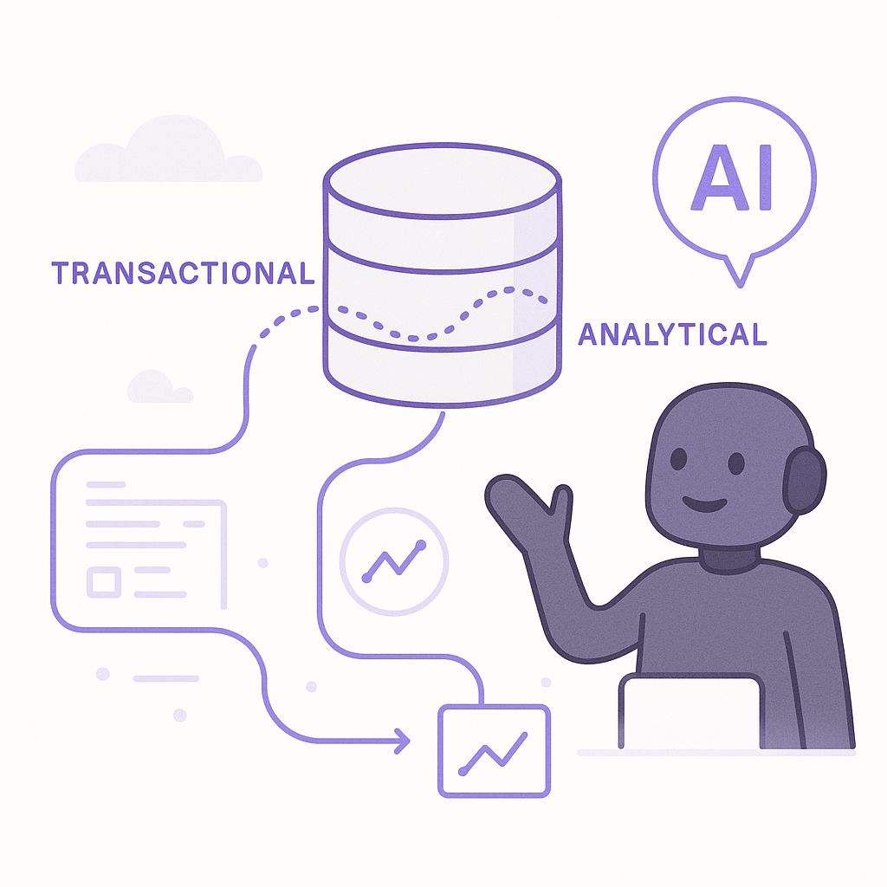
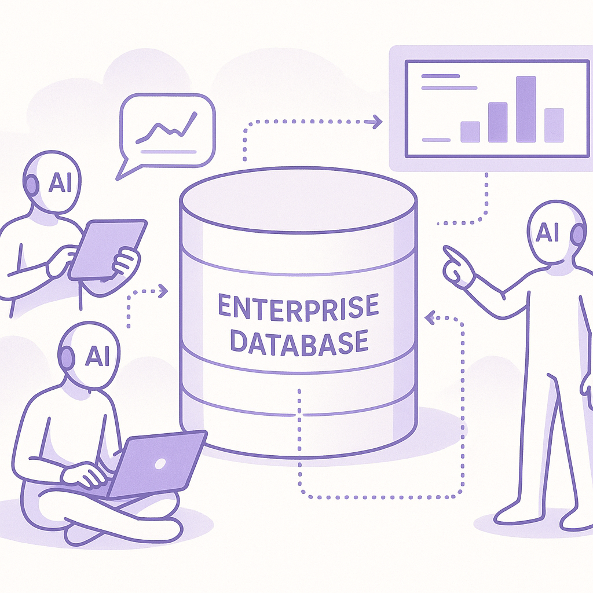
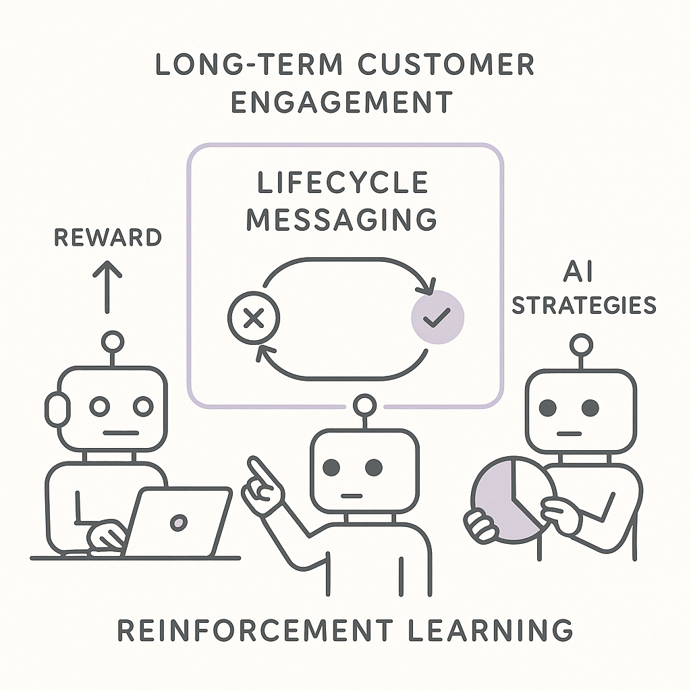

Publishing Recommendation
reviseThe draft posts cover relevant AI trends with practical applications but need revisions to align with Purands AI's brand voice. Avoid terms like 'game-changer' and ensure claims about AI capabilities are precise and evidence-backed. Emphasize real-world applications and trade-offs to maintain credibility and avoid sounding AI-generated.
LinkedIn Posts (10)
1. AI in business ★ Purands solution · high priority
CTA: How do you manage the balance between transactional and analytical data in your business?

⬇ Download image
Image prompt · isometric-flat
Caption: Unified data flow for AI insights
Alternative hooks
- Integrating transactional and analytical data is becoming crucial.
- CedarDB is leading the shift in data integration.
- Unified data handling is the future of AI-driven insights.
Research behind this post (sources, summaries & confidence)
CedarDB wants one database to handle both transactions and analytics, as AI agents raise the stakes conf 0.80 · AI in business
CedarDB's approach of unifying transactional and analytical data handling is crucial as AI agents become more prevalent in business operations. This capability can significantly enhance customer data platforms and CRM systems by providing real-time insights for retention marketing strategies.
Sources & what I took from each
- CedarDB aims to unify transactional and analytical data handling.: The article discusses CedarDB's approach to integrating transactional and analytical data processing to enhance real-time analytics capabilities. ↗ read source
Examples
- CedarDB's platform is being utilized in sectors requiring real-time data analytics, such as finance and retail.
Recent news
- Recent advancements in database technology emphasize the integration of transactional and analytical processing.
Original trend links
Risks / caveats
- Technical challenges in ensuring performance and reliability for both transactional and analytical workloads.
- Potential resistance from organizations already invested in separate systems for transactions and analytics.
2. Microsoft AI’s MAI-Transcribe-2 undercuts competitors on price and speed ★ Purands solution · high priority
CTA: How are you leveraging voice technology in your customer interactions?
Alternative hooks
- In voice commerce, speed and cost matter.
- Efficient speech recognition can transform customer interactions.
- WhatsApp-first commerce needs precise voice tech.
Research behind this post (sources, summaries & confidence)
Microsoft AI’s MAI-Transcribe-2 undercuts competitors on price and speed conf 0.75 · AI in business
Microsoft's competitive pricing and speed for speech recognition can enhance customer interaction through voice-based platforms such as WhatsApp. This development is particularly relevant for APAC's messaging-first commerce dynamic.
Sources & what I took from each
- Microsoft AI's MAI-Transcribe-2 is competitively priced.: The article notes that Microsoft has positioned MAI-Transcribe-2 as more cost-effective and faster than its competitors. ↗ read source
Examples
- Adoption of MAI-Transcribe-2 by customer service departments to improve efficiency and reduce costs.
Original trend links
Risks / caveats
- Potential quality trade-offs in transcription accuracy due to lower pricing.
- Market reaction from competitors that could lead to a price war.
3. LFM2.5-24B-A2B: Built for fast on-device agents ★ Purands solution · high priority
CTA: How do you see on-device AI changing your customer engagement strategies?

Image prompt · isometric-flat
Caption: On-device AI for real-time engagement
Alternative hooks
- Imagine your customer engagement happening right on the user's device.
- What if your AI agents could process data on-device, instantly enhancing user interactions?
- Meet LFM2.5-24B-A2B: transforming how businesses engage with customers, right from their devices.
Research behind this post (sources, summaries & confidence)
LFM2.5-24B-A2B: Built for fast on-device agents conf 0.70 · AI in business
The release of LFM2.5-24B-A2B, a Mixture-of-Experts model tailored for on-device AI agents, is significant for retention marketing. It enables more personalized and efficient data processing on user devices, which can lead to better real-time customer engagement and lifecycle messaging solutions.
Sources & what I took from each
- LFM2.5-24B-A2B enhances on-device AI capabilities.: The sources discuss the model's design for on-device processing, which improves the efficiency of AI agents. ↗ read source
Examples
- Deployment of LFM2.5-24B-A2B in mobile applications for personalized user experiences.
Original trend links
- https://www.liquid.ai/blog/lfm2-5-24b-a2b
- https://www.marktechpost.com/2026/10/14/liquid-ai-lfm2-5-24b-a2b/
Risks / caveats
- Potential limitations in processing power on certain devices that may not fully leverage the model's capabilities.
- Security concerns related to processing sensitive data on-device.
4. AI in business ★ Purands solution · high priority
CTA: How do you see real-time AI changing customer engagement in your region?

Image prompt · isometric-flat
Caption: Real-time interactions in mobile-first regions
Alternative hooks
- In mobile-first regions, every second counts.
- Real-time AI interactions are changing the game.
- Personalization isn't optional anymore.
Research behind this post (sources, summaries & confidence)
Liquid AI Releases LFM2.5-24B-A2B conf 0.70 · AI in business
The release of LFM2.5-24B-A2B by Liquid AI, designed for on-device agents, is significant for improving real-time customer interactions and tailoring marketing strategies, especially in mobile-first regions like APAC.
Sources & what I took from each
- LFM2.5-24B-A2B is designed to enhance on-device AI capabilities.: The article discusses the model's focus on improving efficiency and personalization in mobile-first markets. ↗ read source
Examples
- Implementation of LFM2.5-24B-A2B in smartphone applications to boost user engagement.
Original trend links
Risks / caveats
- Challenges in optimizing AI models for various device specifications.
- Potential security vulnerabilities in on-device processing.
5. Meta prices Muse Voice Transcribe at $0.18 an hour, with real-time diarization for 20+ speakers ★ Purands solution · high priority
CTA: How do you see voice technology reshaping customer service in your market?
Alternative hooks
- Meta's Muse Voice Transcribe is changing the game at $0.18 an hour.
- APAC businesses, are you ready for voice-powered customer service?
- Voice to text on WhatsApp just got affordable with Meta's new offering.
Research behind this post (sources, summaries & confidence)
Meta prices Muse Voice Transcribe at $0.18 an hour, with real-time diarization for 20+ speakers conf 0.70 · AI in business
Meta's competitive pricing for Muse Voice Transcribe could transform customer service interactions via voice channels, especially in markets where WhatsApp commerce is prevalent.
Sources & what I took from each
- Muse Voice Transcribe is priced competitively for enterprise use.: The article highlights the competitive pricing strategy aimed at enterprise adoption for voice-based services. ↗ read source
Examples
- Enterprises adopting Muse Voice Transcribe for enhanced voice-based customer service operations.
Original trend links
Risks / caveats
- Quality and accuracy of voice recognition at a lower price point might be questioned.
- Potential scalability issues with real-time diarization for large numbers of speakers.
6. Connecting AI agents to enterprise knowledge ★ Purands solution · high priority
CTA: How do you see AI transforming customer engagement in your organization?

⬇ Download image
Image prompt · isometric-flat
Caption: AI agents connecting to enterprise knowledge
Alternative hooks
- Ever wonder how AI can actually understand your business context?
- AI isn't just about data processing; it's about understanding.
- What happens when AI gets access to enterprise-wide knowledge?
Research behind this post (sources, summaries & confidence)
Connecting AI agents to enterprise knowledge conf 0.68 · AI in business
The discussion on connecting AI agents to enterprise knowledge is vital for improving the effectiveness of AI in CRM systems and retention marketing. It emphasizes the need for AI to have contextual understanding beyond just data processing.
Sources & what I took from each
- Connecting AI agents to enterprise knowledge enhances their contextual understanding.: The article explores how linking AI to enterprise-wide data improves decision-making and customer engagement. ↗ read source
Examples
- Organizations integrating AI with enterprise knowledge bases to enhance customer support systems.
Original trend links
Risks / caveats
- Complexity in integrating disparate data sources into a cohesive AI framework.
- Risks of data breaches with expanded data access.
7. Loyalty program design ★ Purands solution · high priority
CTA: How do you adapt your engagement strategies for seasonal shopping trends?
Alternative hooks
- Nordstrom's holiday push is a lesson in strategic timing.
- Seasonal shopping behaviors can make or break customer loyalty.
- Smart brands know: holidays are prime time for engagement.
Research behind this post (sources, summaries & confidence)
Nordstrom expands FAO Schwarz offerings, debuts new app features for holidays conf 0.65 · Loyalty program design
Nordstrom's expansion and app feature updates highlight the importance of adapting loyalty programs and customer engagement strategies to seasonal shopping behavior, which is crucial for retention marketing.
Sources & what I took from each
- Nordstrom is expanding FAO Schwarz offerings and updating app features.: The article details Nordstrom's strategic moves to adapt to holiday shopping trends by enhancing product offerings and digital engagement. ↗ read source
Examples
- Nordstrom leveraging new app features to increase customer engagement during the holiday season.
Original trend links
Risks / caveats
- Potential mismatch between new offerings and customer preferences.
- App updates may face technical issues affecting user experience.
8. Alibaba Qwen Introduces QwenGyre: Elastic Reinforcement Learning for Long-Horizon Agents ★ Purands solution · high priority
CTA: How do you see reinforcement learning shaping customer engagement strategies?

⬇ Download image
Image prompt · isometric-flat
Caption: Long-horizon AI for lifecycle messaging
Alternative hooks
- Alibaba's QwenGyre could redefine long-term customer engagement.
- Imagine a retention strategy that predicts needs months ahead.
- Can AI predict customer behavior over long periods? Alibaba thinks so.
Research behind this post (sources, summaries & confidence)
Alibaba Qwen Introduces QwenGyre: Elastic Reinforcement Learning RL for XLong-Horizon Agents conf 0.65 · AI startups
Alibaba's introduction of QwenGyre, an advanced reinforcement learning framework, showcases the potential for AI to improve long-term customer engagement strategies and lifecycle messaging systems.
Sources & what I took from each
- QwenGyre is a reinforcement learning framework for long-horizon tasks.: The article explains how QwenGyre is designed to handle extended tasks with improved efficiency. ↗ read source
Examples
- Use of QwenGyre in developing AI systems that require sustained engagement over long periods.
Original trend links
Risks / caveats
- Complexity in training reinforcement learning models for diverse applications.
- Risk of overfitting in long-horizon reinforcement learning tasks.
9. Gen Z, Gen Alpha and the AI-ificiation of retail this holiday season ★ Purands solution · high priority
CTA: How is your business adapting to AI-driven shopping trends this holiday season?
Alternative hooks
- Gen Z and Gen Alpha are redefining holiday shopping with AI.
- How do you keep Gen Z and Gen Alpha engaged after the holidays?
- Retailers are using AI to connect with Gen Z and Gen Alpha this season. Are you?
Research behind this post (sources, summaries & confidence)
Gen Z, Gen Alpha and the AI-ificiation of retail this holiday season conf 0.60 · Retention marketing
Understanding the shopping behaviors of Gen Z and Gen Alpha, especially their interaction with AI-powered retail solutions, is crucial for crafting effective retention marketing strategies. Insights into these demographics can lead to more tailored engagement approaches.
Sources & what I took from each
- Gen Z and Gen Alpha are interacting more with AI-powered retail solutions.: The source discusses trends in retail engagement driven by younger generations' preferences for AI-enhanced shopping experiences. ↗ read source
Examples
- Retailers using AI chatbots and virtual assistants to engage with Gen Z and Gen Alpha customers.
Original trend links
Risks / caveats
- Generational assumptions may not apply universally across different regions and cultures.
- Potential overestimation of AI impact on retail preferences.
10. Google Releases Gemini 4 Argon API With 1M Token Output Limit
CTA: How do you see high-output APIs like Gemini 4 reshaping CRM strategies?
Alternative hooks
- Google's new API pushes the boundaries of CRM capabilities.
- Ever hit the wall with data processing limits? Not with Gemini 4.
- 1 million tokens: more than just a number for CRM strategies.
Research behind this post (sources, summaries & confidence)
Google Releases Gemini 4 Argon API With 1M Token Output Limit conf 0.72 · AI in business
Google's release of the Gemini 4 Argon API with a high output limit represents a significant step in AI capabilities, which can enhance complex customer data handling and improve CRM strategies.
Sources & what I took from each
- Google's Gemini 4 Argon API supports complex data processing with a high token limit.: The article highlights the API's capability to handle large-scale data processing, beneficial for CRM applications. ↗ read source
Examples
- Companies using Gemini 4 Argon API for advanced data analytics in customer relationship management.
Original trend links
Risks / caveats
- Potential data privacy concerns with processing large volumes of customer data.
- Technical challenges in integrating high-output APIs with existing CRM systems.
Today's Trends
| # | Trend | Category | Why it matters |
|---|---|---|---|
| 1 | CedarDB wants one database to handle both transactions and analytics, as AI agents raise the stakes
source |
AI in business | CedarDB's approach of unifying transactional and analytical data handling is crucial as AI agents become more prevalent in business operations. This capability can significantly enhance customer data platforms and CRM systems by providing real-time insights for retention marketing strategies. |
| 2 | LFM2.5-24B-A2B: Built for fast on-device agents
source source |
AI in business | The release of LFM2.5-24B-A2B, a Mixture-of-Experts model tailored for on-device AI agents, is significant for retention marketing. It enables more personalized and efficient data processing on user devices, which can lead to better real-time customer engagement and lifecycle messaging solutions. |
| 3 | Microsoft AI’s MAI-Transcribe-2 undercuts competitors on price and speed
source |
AI in business | Microsoft's competitive pricing and speed for speech recognition can enhance customer interaction through voice-based platforms such as WhatsApp. This development is particularly relevant for APAC's messaging-first commerce dynamic. |
| 4 | Gen Z, Gen Alpha and the AI-ificiation of retail this holiday season
source |
Retention marketing | Understanding the shopping behaviors of Gen Z and Gen Alpha, especially their interaction with AI-powered retail solutions, is crucial for crafting effective retention marketing strategies. Insights into these demographics can lead to more tailored engagement approaches. |
| 5 | Target wants more efficient stores. An upgraded employee app could help.
source |
CRM strategy and lifecycle messaging | Target's upgraded app that incorporates AI insights highlights the trend of using AI to improve store operations and customer interactions. This can lead to better CRM strategies and more effective lifecycle messaging. |
| 6 | Nordstrom expands FAO Schwarz offerings, debuts new app features for holidays
source |
Loyalty program design | Nordstrom's expansion and app feature updates highlight the importance of adapting loyalty programs and customer engagement strategies to seasonal shopping behavior, which is crucial for retention marketing. |
| 7 | Z.ai GLM-Legal Beats Claude Fable 5 and Kimi K3 on Harvey LAB
source |
AI in business | The advancement of legal AI models like Z.ai GLM-Legal reflects the increasing sophistication of AI in specialized business applications. This could influence CRM and customer engagement strategies by providing more reliable AI-driven insights. |
| 8 | Google Releases Gemini 4 Argon API With 1M Token Output Limit
source |
AI in business | Google's release of the Gemini 4 Argon API with a high output limit represents a significant step in AI capabilities, which can enhance complex customer data handling and improve CRM strategies. |
| 9 | Connecting AI agents to enterprise knowledge
source |
AI in business | The discussion on connecting AI agents to enterprise knowledge is vital for improving the effectiveness of AI in CRM systems and retention marketing. It emphasizes the need for AI to have contextual understanding beyond just data processing. |
| 10 | Liquid AI Releases LFM2.5-24B-A2B
source |
AI in business | The release of LFM2.5-24B-A2B by Liquid AI, designed for on-device agents, is significant for improving real-time customer interactions and tailoring marketing strategies, especially in mobile-first regions like APAC. |
| 11 | Alibaba Qwen Introduces QwenGyre: Elastic Reinforcement Learning RL for XLong-Horizon Agents
source |
AI startups | Alibaba's introduction of QwenGyre, an advanced reinforcement learning framework, showcases the potential for AI to improve long-term customer engagement strategies and lifecycle messaging systems. |
| 12 | Datalab Releases OmniParseBench: An Open OCR Benchmark With 16,288 Pass/Fail Tests to Audit OCR Parsers
source |
AI in business | The release of OmniParseBench by Datalab can enhance AI-driven document processing capabilities, which is critical for CRM systems that rely on accurate data extraction for customer insights and lifecycle messaging. |
| 13 | Meta prices Muse Voice Transcribe at $0.18 an hour, with real-time diarization for 20+ speakers
source |
AI in business | Meta's competitive pricing for Muse Voice Transcribe could transform customer service interactions via voice channels, especially in markets where WhatsApp commerce is prevalent. |
| 14 | APAC commerce dynamics: WhatsApp-first, mobile-first strategies | APAC commerce dynamics | The focus on WhatsApp-first and mobile-first strategies in APAC highlights the need for tailored customer engagement and retention marketing approaches that leverage these platforms. |
Risk Assessment
- Potential over-reliance on AI capabilities in the posts without balancing with practical limitations.
- A few posts use terms like 'game-changer' which conflict with brand guidelines against hype.
- Some posts might imply exaggerated outcomes without clear evidence.
Suggested LinkedIn Comments (30)
Open each post, then paste the copied comment. Nothing is posted automatically.
1. insight · rss:techcrunch.com — The founders detailed how their startup is developing AI that can design chips,
Post by: rss:techcrunch.com
Why it works: It highlights the practical application and potential challenges, adding depth beyond the post's premise.
↗ Open LinkedIn post to paste comment2. opinion · rss:techcrunch.com — At TechCrunch Disrupt, Flock CEO Garrett Langley defended his company's surveill
Post by: rss:techcrunch.com
Why it works: It acknowledges the benefits while emphasizing the importance of privacy, adding a nuanced viewpoint.
↗ Open LinkedIn post to paste comment3. expansion · rss:techcrunch.com — It’s time to unveil the five companies that will be competing in the Startup Bat
Post by: rss:techcrunch.com
Why it works: Connects the event to broader themes of innovation and industry impact, adding context to the excitement.
↗ Open LinkedIn post to paste comment4. opinion · rss:techcrunch.com — Every day, conversations unfold across social media and websites around the worl
Post by: rss:techcrunch.com
Why it works: It underscores the importance of the company's work, linking it to broader societal impacts.
↗ Open LinkedIn post to paste comment5. insight · rss:techcrunch.com — Intero Biosystems is selling lab-grown human intestines to drugmakers as regulat
Post by: rss:techcrunch.com
Why it works: Adds a positive ethical dimension to the technological innovation, providing a holistic view.
↗ Open LinkedIn post to paste comment6. insight · rss:techcrunch.com — Databases have traditionally been designed either for analytical data or for ope
Post by: rss:techcrunch.com
Why it works: It connects the database innovation directly to AI needs, providing a practical perspective.
↗ Open LinkedIn post to paste comment7. insight · rss:techcrunch.com — Jio plans to use most of its IPO proceeds to repay debt as it expands beyond tel
Post by: rss:techcrunch.com
Why it works: It ties the financial move to long-term strategy, offering a clear business perspective.
↗ Open LinkedIn post to paste comment8. opinion · rss:techcrunch.com — Langley’s comments come amid mounting scrutiny of Flock from privacy advocates,
Post by: rss:techcrunch.com
Why it works: It emphasizes transparency and trust, key elements that resonate in discussions about surveillance.
↗ Open LinkedIn post to paste comment9. respectful challenge · rss:techcrunch.com — Colossal announced a new AI platform to help accelerate its de-extinction effort
Post by: rss:techcrunch.com
Why it works: It acknowledges innovation while urging caution, adding a thoughtful layer to the discussion.
↗ Open LinkedIn post to paste comment10. opinion · rss:techcrunch.com — Flock CEO Garrett Langley said that the surveillance company has not canceled co
Post by: rss:techcrunch.com
Why it works: It points out the ethical complexities, stressing the need for openness and responsibility.
↗ Open LinkedIn post to paste comment11. insight · rss:www.theverge.com — Consulting firm McKinsey & Company is going to ask some entry-level candidat
Post by: rss:www.theverge.com
Why it works: It offers a nuanced view on the balance between AI standardization and the need for human interaction in interviews.
↗ Open LinkedIn post to paste comment12. opinion · rss:www.theverge.com — I'm just going to come right out and say it. I love the approach Apple has taken
Post by: rss:www.theverge.com
Why it works: It acknowledges the product's potential while pointing out the challenges it faces in a competitive market.
↗ Open LinkedIn post to paste comment13. insight · rss:www.theverge.com — OpenAI is facing a new wave of lawsuits from eight US states that accuse the com
Post by: rss:www.theverge.com
Why it works: It emphasizes the importance of ethical responsibility in technology, a key issue in the ongoing AI discourse.
↗ Open LinkedIn post to paste comment14. insight · rss:www.theverge.com — We've all gotten a scam text about a nonexistent parking ticket or a fake packag
Post by: rss:www.theverge.com
Why it works: It highlights a successful example of corporate and governmental collaboration in cybersecurity.
↗ Open LinkedIn post to paste comment15. opinion · rss:www.theverge.com — Last week, Anthropic and OpenAI looked like they had the AI race to themselves,
Post by: rss:www.theverge.com
Why it works: It provides a balanced view by acknowledging current leaders while noting the potential for market shifts.
↗ Open LinkedIn post to paste comment16. insight · rss:www.theverge.com — New York Attorney General Letitia James revealed a years-long multi-state invest
Post by: rss:www.theverge.com
Why it works: It highlights the need for regulatory frameworks to adapt to evolving tech landscapes, a pressing issue.
↗ Open LinkedIn post to paste comment17. opinion · rss:www.theverge.com — It's been four long years since the last Apple TV 4K was released, and in that t
Post by: rss:www.theverge.com
Why it works: It acknowledges the strategy behind incremental product updates, providing context for consumer expectations.
↗ Open LinkedIn post to paste comment18. insight · rss:www.theverge.com — YouTube is adding a "Made with AI" label to tracks that were "altered or fully g
Post by: rss:www.theverge.com
Why it works: It points out the importance of transparency and communication in AI-labeled content, a relevant concern.
↗ Open LinkedIn post to paste comment19. insight · rss:www.theverge.com — While we cover a lot of deals on specific products, it’s rare that we find worth
Post by: rss:www.theverge.com
Why it works: It connects the discount promotion to broader consumer behavior and digital ecosystem engagement.
↗ Open LinkedIn post to paste comment20. insight · rss:www.theverge.com — Apple only just announced on Tuesday that its first smart display, the HomeView,
Post by: rss:www.theverge.com
Why it works: It contextualizes the discount within a broader marketing strategy, providing a realistic view of its impact.
↗ Open LinkedIn post to paste comment21. insight · rss:feeds.arstechnica.com — Incident hitting 700 supermarkets exploited outdated devices exposed to the Inte
Post by: rss:feeds.arstechnica.com
Why it works: It highlights the importance of proactive tech management without being alarmist.
↗ Open LinkedIn post to paste comment22. insight · rss:feeds.arstechnica.com — But the new "Preview" app "will have some bugs," Epic warns.
Post by: rss:feeds.arstechnica.com
Why it works: It appreciates the company's transparency, which is often undervalued in tech releases.
↗ Open LinkedIn post to paste comment23. opinion · rss:feeds.arstechnica.com — Suspected Russian drones have sunk or damaged 5 ships near Bulgaria and Romania.
Post by: rss:feeds.arstechnica.com
Why it works: It connects a specific incident to broader geopolitical implications, showing a deeper understanding.
↗ Open LinkedIn post to paste comment24. respectful challenge · rss:feeds.arstechnica.com — "This is great news for us. We're staffing up. We're accelerating."
Post by: rss:feeds.arstechnica.com
Why it works: It adds a cautionary note to the enthusiasm, emphasizing strategic planning.
↗ Open LinkedIn post to paste comment25. opinion · rss:feeds.arstechnica.com — FCC chair threatens E-Rate fund, blames schools for kids' excessive screen time.
Post by: rss:feeds.arstechnica.com
Why it works: It broadens the conversation from a single blame point to a systemic issue.
↗ Open LinkedIn post to paste comment26. insight · rss:feeds.arstechnica.com — Plaintiff claims cameras enabled warrantless tracking and monitoring after he pr
Post by: rss:feeds.arstechnica.com
Why it works: It focuses on the broader implications of the legal case, which affects public interest.
↗ Open LinkedIn post to paste comment27. expansion · rss:feeds.arstechnica.com — With the end of IMSA’s 2026 season, we have thoughts about the future of the spo
Post by: rss:feeds.arstechnica.com
Why it works: It links the end of a season to future tech-driven possibilities in the sport.
↗ Open LinkedIn post to paste comment28. expansion · rss:feeds.arstechnica.com — "Have you ever seen a world born?"
Post by: rss:feeds.arstechnica.com
Why it works: It adds a metaphorical depth to the post, connecting it to broader technological shifts.
↗ Open LinkedIn post to paste comment29. insight · rss:feeds.arstechnica.com — AI design tools make proteins that break bonds that are stable for hundreds of y
Post by: rss:feeds.arstechnica.com
Why it works: It underscores the groundbreaking nature of AI in biotech, hinting at real-world applications.
↗ Open LinkedIn post to paste comment30. insight · rss:feeds.arstechnica.com — OpenAI engineer faces 5 years and $250K fine as FBI lobs foreign spy charges.
Post by: rss:feeds.arstechnica.com
Why it works: It ties a specific legal case to the broader issue of tech and security, adding depth.
↗ Open LinkedIn post to paste comment